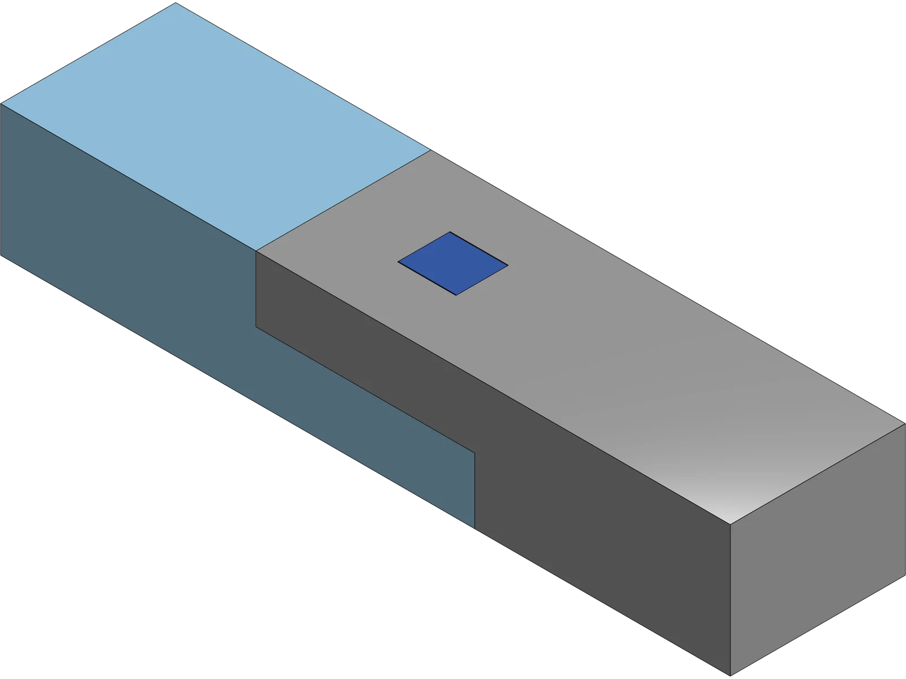

楔钉不是全部，它只负责最后一个自由度。
把这个榫卯理解成“塞一根木钉”，会漏掉它真正在做的事：三层几何依次拿掉不同的运动，每一层都只解决上一层解决不了的那一个。
| 加到哪一层 | 还剩下什么运动 | 这一层负责什么 |
|---|---|---|
| 只有上下半搭 | 沿轴滑动、横向平移、抬起、绕竖轴转动 | 只提供贴合面和厚度分配 |
| ＋小舌进入盲槽 | 只剩沿轴滑动 | 挡住抬起、横移和转动 |
| ＋楔钉贯穿 | 无 | 以剪切挡住沿轴分离 |
这也是为什么小舌被做成插进盲槽的短榫，而不是搭接面上的一个凸台：凸台只能防转，挡不住抬起。
星级是为阅读建立直觉的编辑标记，不是标准化测试。“未知”就是字面意思：这一版还没有实物。
先看它要求怎样装，再决定要不要打印。
拖动上面的拆装进度，或者直接旋转模型。三件在分开时的位置就是它们真实装配路径的逆向：构件 A 沿轴退出，楔钉竖直抽出，构件 B 始终不动。
有，且不可交换：两件必须先合到位，中部方孔才会对齐；孔没对齐时楔钉根本进不去。
靠剪切，不靠摩擦压紧。它横穿在分离方向上，所以两件想沿轴拉开就必须先剪断它。
插入力、层纹、象脚、打进去时孔壁会不会裂——全部要由实物回答，这一版还没有实物。
间隙只加在配合面上，承压面一律贴合。
v0.7 的实际尺寸如下。它们不是从图上量的，而是建模脚本里的常量本身；页面表格和模型对不上的时候，以 Onshape v0.7 为准。
| 项目 | v0.7 实际值 | 说明 |
|---|---|---|
| 料截面 | 24 × 18 mm | 两件相同截面 |
| 单件长度 / 装配总长 | 70 mm / 100 mm | 搭接 30 mm，两端各外伸 35 mm |
| 半搭厚度 | 9 mm ＋ 9 mm | 合起来仍是 18 mm |
| 小舌（公） | 7.90 W × 5.00 L × 2.90 H mm | 名义 8 × 5 × 3，各边减去 C/2 |
| 小舌槽（母） | 8.10 W × 5.40 L × 3.10 H mm | 各边加 C/2；端部另留 0.40 mm，故意不承压 |
| 配合间隙 C | 0.20 mm（母 − 公，总量） | 公母各让 0.10 mm，两件因此保持全等 |
| 楔钉孔 | Y 向 7.20 mm 等宽；X 向 6.40 → 8.00 mm | 锥率 0.0889 mm/mm，入口在上表面 |
| 楔钉 | 厚 7.00 mm；6.80 → 8.00 mm；长 13.5 mm | 与孔同锥率，法向零偏移 |
| 楔钉落位 | 头部与入口面齐平，尖端离出口面 4.50 mm | 行程中合拢 1.2 mm 的间隙 |
| 搭接角让位 | 45°，边长 0.20 mm，只切中间 23 mm | 两侧各留 0.50 mm 不切 |
| 卯口导入 | 45°，0.50 mm | 在肩面内，装配后不可见 |
- 30 × 24 mm 的搭接面——两件的主要贴合面。
- 两个 30 mm 肩面——决定装配长度是不是 100 mm。
楔子和倒角，各自有一条不能违反的算术。
其一：楔子不可能同时“齐平、贴紧、有间隙”
在锥面上加法向间隙，等于让楔钉多走一段才碰到孔壁。这个模型的锥率是 0.0889 mm/mm，所以 0.2 mm 的法向间隙会让楔钉整整多沉 0.2 ÷ 0.0889 ＝ 4.5 mm。间隙不会变成“松一点”，只会变成“深一点”。
- 楔钉就是孔在顶部 13.5 mm 的那一段轮廓，法向偏移为零。
- 它在行程中把 1.2 mm 的开口差合拢，最后头部与入口面齐平、尖端离出口面 4.5 mm。
- 楔钉掉不下去：6.80 mm 的尖端比孔在出口面的 6.40 mm 开口还宽。
- 代价是灵敏：尺寸每差 1 mm，落位就移动 11.25 mm。打偏 0.05 mm 对应约 0.5 mm 的落位偏差。
其二：让位只要 0.586 r，而且不能切到侧面
FFF 会在每个内凹角留下一个喷嘴半径。它必须被让开，否则那一点点圆角会把整条搭接面顶开——而这个接头是超静定的，顶开的间隙会随机落在搭接面或任一个肩面上。
只挡住 0.08 mm。
90° 内凹角里，半径 r 的圆角沿对角线只侵入 0.414 r；边长 c 的 45° 切口沿同一方向让出 0.707 c。要盖住圆角，只需要 c ≥ 0.586 r——0.4 mm 喷嘴大约是 0.12 mm。v0.7 取 0.20 mm，留了约三分之二的余量；之前那一版取 0.40 mm，是需要量的三倍多。
搭接角位于装配后的外表面。让位一旦横穿整个 24 mm 宽度，就会在两个侧面破出，在接缝上留下一个三角形通槽——整件上有四个。所以 v0.7 把让位从轮廓草图里拿出来，单独切中间 23 mm，两侧各留 0.5 mm 尖角，接缝因此读起来是连续的一条线。代价是那两条 0.5 mm 窄边保留约 0.08 mm 干涉，它们位于截面最边缘、最容易压服的地方。
能在数字上证明的，和不能的。
tools/verify_keyed_tenon.py 每次重建后都会跑一遍。它的期望值不是抄进去的，而是从建模脚本自己的常量算出来的，所以两个文件不会各说各话。

- 18 个特征全部重建通过。
- 三个零件的包围盒与体积对上解析值：A 21135.8310 mm³、B 21083.9910 mm³、楔钉 699.3000 mm³。
- 两件在楔钉孔以外逐点全等：38 / 38 个顶点重合。
- 布尔并集探针测得互相侵入 0.000000 mm³——两件只在搭接面和两个肩面相遇。
打印方向是设计的一部分，不是切片时才选的。
两根构件侧面朝下打印：着床面 70 × 18 mm，高 24 mm，成长方向是 Y，层面是 X-Z 平面。
躺在 24 × 70 的面上，小舌会变成 5 mm 的无支撑悬空。
这个方向下，所有要紧的内凹角都落在 X-Z 平面，也就是层面上。
平放。它的两个 Y 面是平行的，层纹因此顺着受剪方向走。
第一轮要回答的，是四个假设里的哪一个错了。
这一版的可疑之处已经写清楚，复刻时请一次只动一个变量，让结果能互相比较。
- 小舌 / 槽的 C ＝ 0.20 mm：能否徒手推入，两个肩面是否同时贴合。
- 楔钉落位：实际停在哪里，与预测的“头部齐平、尖端离出口面 4.5 mm”差多少。
- 搭接角 0.20 mm 让位：够不够；两条 0.5 mm 未让位窄边是否明显顶住。
- 孔壁：楔钉打到底时，7.20 mm 孔的侧壁有没有裂。
历史只讲到足够理解。
现代中文资料通常把楔钉榫用于弧形材的对接，最常被举的例子是圈椅的月牙扶手，此外还有香几、坐墩、圆杌凳和圆形边框、托泥等部位。两段弧材的拼口既要保持线条连续，又要挡住上下与左右的错移，正好需要这样一组分层约束。